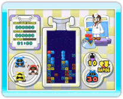
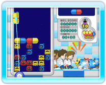

7 |
Bienvenue! |
 |
Comme son nom l’indique, Dr. Mario & Bactéricide contient deux jeux: Dr. Mario et Bactéricide. Les règles et les objectifs principaux sont les mêmes, mais les commandes sont différentes.

● Qu’est-ce que Dr. Mario? Le but du jeu est d’éliminer les virus avec des gélules de vitamines. Si vous alignez quatre éléments ou plus de la même couleur (gélules ou virus) verticalement ou horizontalement, la ligne disparaît. Pour jouer à Dr. Mario, tenez la télécommande Wii à l’horizontale et utilisez les boutons. 
● Qu’est-ce que Bactéricide? Le but du jeu est le même que dans Dr. Mario: éliminer les virus à l’aide de gélules. Dans ce jeu, vous tenez la télécommande Wii à la verticale et utilisez le pointeur. Jusqu’à quatre personnes peuvent jouer ensemble. ● Mode bataille Dans Dr. Mario, vous pouvez jouer contre un ami se trouvant près de vous ou utiliser la connexion Wi-Fi Nintendo pour vous mesurer à des personnes dans le monde entier. Vous pouvez même jouer avec des gens qui n’ont pas acheté le jeu grâce à Dr. Mario Demo, une version démo du jeu que vous pouvez envoyer à vos amis Wii via WiiConnect24. |
 |
 |
 |